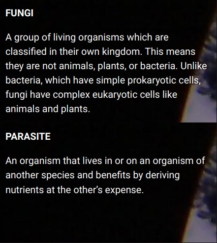
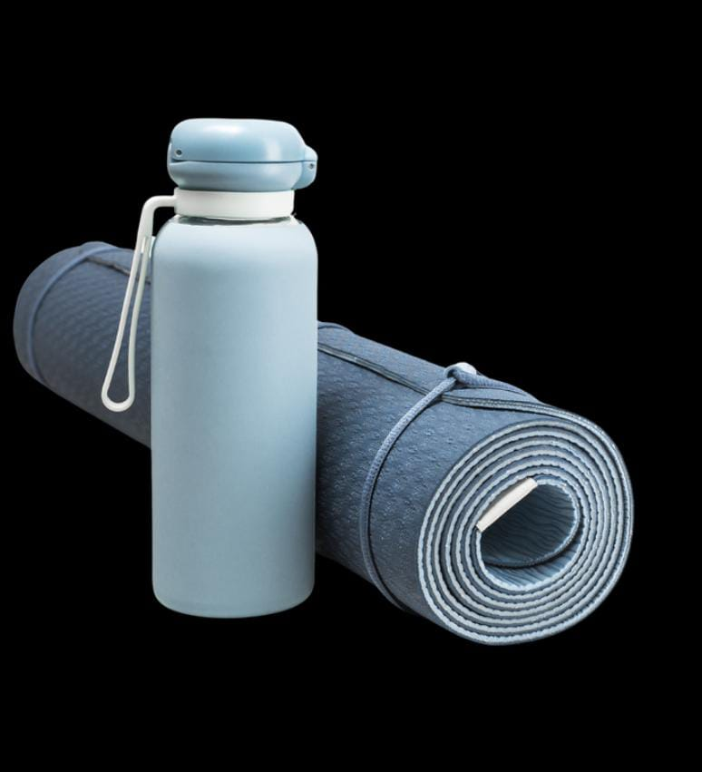

Thank you for purchasing this course and supporting Aligned Sovereignty and our vision of optimising health for humanity.
Congratulations on making the choice to nurture and prioritize your health.
Over the next 6 weeks (and possibly more!) I will guide you through a comprehensive fungal parasite colon cleanse that will rid your body of the nasties that are keeping you stuck in dis-ease.
During our 6 weeks together, my aim is for you is not simply to do a deep detox of your colon, but to set the foundations for a brand new you. By establishing lifestyle support systems that are achievable and manageable, you will create consistency through applied action and breaking down of limiting beliefs and habits. The goal is not just to implement these teachings throughout the 6 weeks, but to incorporate them into your life in the long-term. By the end of this immersion, you will have gained a deeper understanding and attunement with your body, generating the confidence to pursue the things you love and enjoy true vitality.
The program is ONLY as effective as your dedication to your own growth and wellbeing.
This program requires discipline and diligence. Clear, honest communication means the client is responsible for speaking up and giving feedback with regards to what they are needing and how each phase of the program is affecting their mind, body, and spirit. This means that between practitioner and client, there is a constant stream of feedback, consent, and trust so that both parties benefit abundantly from this 6 week program.
During this cleanse, sabotage patterns will arise. I am here to hold space for you and to help you break old patterns and beliefs. Some of the patterns I see come up with clients consistently are, too busy, had a drama pop up, story’s and excuses, relationship drama, forgetting to take action on instructed steps, etc. My job is to help you notice these so you can break the pattern.
The vast majority of humans (something like 95% of us) are living with an overgrowth of fungus and parasites in our systems. They love all the food we love — starches and sugar.
And thanks to the amazing ease of which we have access to these foods that we consume all day, everyday…it creates a perfect breeding ground for the things that are keeping us so sick. On top of that, our environments are full of toxins — from the air we breathe, to the water we drink, to the foods we eat. So our physical vessels become absolutely overloaded with a toxic load that they simply weren’t designed to handle.
This toxic load results in systemic inflammation, and is the root cause of all dis-ease within the human body. Unfortunately a lot of our habits and the poor diet choices we make, prevent our body from doing its job, and allow these pathogens to flourish and cause further harm.
The presence of parasites and fungal overgrowths manifest in a wide range of symptoms – the most common of which can be skin conditions like eczema and psoriasis, bloating, lethargy, poor sleep, painful menstruation, chronic illnesses, etc. Left untreated these can lead to life-threatening disease and even mental illness such as anxiety and depression, cancer, parkinson’s, and MS.
It is essential for lasting vitality, that we regularly do a deep fungal parasite colon cleanse in order to bring out bodies back to homeostasis, and then they can do what they were designed to do…we can heal from anything.

The aim of this course is to help you bring your body back to homeostasis, so that you can begin to eradicate symptoms of dis-ease and remember what it feels like to thrive in life.
Over the course of six weeks, most participants will successfully reduce parasite populations and bring fungal colonies down to healthy levels. This detox program also focuses on repairing and restoring healthy gut and digestive functions, while boosting the immune system.
For the most effective cleanse we recommend completing this 6 week program annually
The first week of the detox is our elimination phase. You’ll begin adjusting the foods and beverages you are consuming, and gather the supplements that are recommended to support your cleanse.
In weeks 2 & 3, expect to have some bowel irregularity while your body detoxes and adjusts, you may feel more tired, experience mood swings, or have flare-ups of symptoms. All of this is perfectly okay and expected. You will also likely experience cravings for some of your normal comfort foods or snacks. This is simply the die-off process happening as the parasites begin to be starved of the foods that they thrive on. Just remember this is all part of the process.
You will be eliminating many of your favourite foods and drinks, and adding in new practices which may feel a bit overwhelming. But you’ll settle into the program and find your flow with it in no time. If you do happen to break the program, don’t be discouraged. Just simply continue the program to the best of your ability. I don’t expect perfection. But I do expect that you notice what feels hard, recognize your sabotage patterns, and choose differently the next time they come up.
Breaking down of old patterns and stories is where the transformation begins.
It is very likely that you will feel worse before you feel better. This is due to the fact you will have tens of millions of bacterial and parasitic organisms dying off inside your system. Your body will systematically destroy and eliminate the atrophied pathogens, however you may experience discomfort, bloating, low moods, and irritability during the process. If at any time you feel overwhelmed by what you are experiencing, please reach out to me. I never want you to feel as if you are alone and unsupported.
As the cleanse moves into weeks 4 & 5, you will notice a significant and drastic shift in your energy levels, the quality of your sleep, and your overall mood will be much improved. Enjoy it!
This is the beginning of the new you!
The more time you can give yourself to prepare – the more successful you will be!
Down, Noticing + Taking Action
You will get out of this program what you put in. Please be sure to carve out a little extra space for yourself over the course of these 6-weeks to not only attend our live calls and implement what is being shared…but to slow down enough to notice what is coming up for you. This is truly where the transformational aspect of this comes in.
Be Open & Teachable
You may have been on a healing journey for many years, and have ideas of what’s right vs wrong. I ask that you put all of that aside, and instead be open and willing to take on new information. Teachability is one of the highest measures of success in this program. If you are not teachable, you will likely repeat sabotage patterns and therefore continue to replicate the same outcomes/habits that got you here in the first place.
Check-Ins (Platinum + Gold only)
I expect honest & transparent check-ins about where you’re at, issues that are arising, struggles that you are having, etc. I can only support you in my highest capacity, when I know the truth of what is coming up for you. Please don’t hold back. And yes, get comfortable with the idea of taking photos of your poop and sending them to me daily.
Set yourself up for success.
Over the next few weeks, begin to prepare yourself for the transformation that is about to take place. As soon as you said YES to this program, energetically your body has begun to prepare itself and you may notice emotions begin to arise….that’s ok, just allow it. Be sure to familiarise yourself with the protocol that is outlined in this booklet, and begin to gather the recommended supplements so that you are ready to go for Week 1!
The Eden Health IDF #1 and #2 are included in the price of this program and will be shipped directly to you. Please do not go out and purchase on your own.
HEALTH FOODS INTESTINAL DETOX FORMULA #1 + #2
Broad spectrum detoxifiers to cleanse, heal, strengthen and replenish the digestive tract.
RAW APPLE CIDER VINEGAR
Kills bacteria, reduces blood sugar and insulin response.
NORTH AMERICAN HERB & SPICE SUPER STRENGTH P73 OREGANO OIL
Highly potent detoxifier and immunity booster.
GELATIN & COLLAGEN
Gut and liver healer, joint health, healthy hair, skin and nails. Please ensure that the product is from organic and grass-fed, grass-finished sources.
MOUNT CAPRA GOAT MILK COLOSTRUM
Rich in proteins, vitamins, growth factors and cytokines to boost gut immunity and growth of gastrointestinal tissue.
BIOPTIMIZERS MAGNESIUM BREAKTHROUGH
Helps repair muscles, improves cardiac function and aids in achieving deep, restful sleep.
TURMERIC
A powerful anti-microbial and anti-bacterial that supports foundational immune function.
MILK THISTLE, CHAMOMILE + DANDELION TEAS
Milk thistle + dandelion both help to support liver function and bile production. Chamomile tea is great for calming the nervous system, especially when taken in conjunction with collagen + glycine.
Throughout week 1, you will be eliminating foods from your diet that fungus and parasites thrive on, such as most starches and sugars. From week 2, you will be on a restricted diet. As such, the majority of your diet will be meat, vegetables, a few fruits, and raw dairy products. If you are vegetarian, I will allow a few other foods to support your protein intake. This will be discussed in our first session together.
If you do not do so already, please ensure that all of the meats and produce you consume are of the highest quality. Ideally, sourcing your foods from local farms that are spray-free or organic is best. All meats should be grass-fed, grass-finished, raised without hormones or antibiotics, and free-range. It is essential that your fruits and veggies are spray-free or organic.
Please be aware that the majority of your meals should be cooked at home. This is important in ensuring that you know exactly what’s going into your food. If you are busy with work and other priorities, please make sure that you have meals and snacks prepared ahead of time so that you don’t get hangry and make poor choices which will reduce the efficacy of your cleanse.
If you are to eat out, please be very stringent and strict in making sure that the restaurant you choose uses good, clean products. Be sure to ask for your meals to be cooked in butter, ghee, olive oil, or coconut oil only.
Please steer clear of seed and vegetable oils.
| Grass-fed, Grass-finished, Pasture-raised and Wild caught Meat & Fish |
|---|
| Beef, lamb, goat, eggs, chicken, duck, turkey, and organ meat. Pork is okay but not recommended. Fish and other seafood are okay, but choose high quality and wild, not farmed. Bone broth is highly recommended. |
| Organic, spray-free vegetables |
| Details about organic, spray-free vegetables. |
| Organic, spray-free fruits |
| Details about organic, spray-free fruits. |
| Organic Nuts + Seeds |
| Details about organic nuts + seeds. |
| Fats & Oils |
| Details about fats & oils. |
| Raw Dairy, Probiotic Yogurt & Milk Alternatives |
| Details about raw dairy, probiotic yogurt & milk alternatives. |
| Celtic Sea Salt |
| Details about Celtic sea salt. |
| Alcohol |
|---|
| Beer, wine, spirits, liquors and bitters. |
| Grains |
| Details about organic, spray-free vegetables. |
| Sugar |
| Details about organic, spray-free fruits. |
| Caffeine |
| Details about organic nuts + seeds. |
| Below ground vegetables |
| Details about fats & oils. |
| Pasteurised Dairy & Milk Alternatives |
| Details about raw dairy, probiotic yogurt & milk alternatives. |
| Cooking oils |
| Details about Celtic sea salt. |
| Soy |
| Details about Celtic sea salt. |
| All legumes & Beans |
| Details about Celtic sea salt. |
| Artifcial preservatives, colours,and flavours |
| Details about Celtic sea salt. |
| Tinned / Canned and frozen foods |
| Details about Celtic sea salt. |
Neti pot and salts
A powerful tool to help move toxins out of the sinus cavity. We recommend using a netty pot 1-2x per week throughout the 6 week course
Tongue scraper
As we sleep, toxins accumulate on our tongues. Scraping the tongue ?rst thing upon waking is an important part of the detox process. Ensure your tongue scraper is stainless-steel or cooper, absolutely not plastic!
Natural bristle brush (for body)
Dry brushing helps to slough off dead cells and excess toxins from the skin, while also stimulating the lymphatic system.
Floss
Our gums are linked directly to our nervous system. When bacteria and toxins remain trapped between the teeth they get embedded in the gums and create chronic in]ammation
Diary or Journal
A primary component of this Transformational Detox is slowing down and noticing the thoughts, emotions and feelings that are arising within your body. A daily journaling practice is an essential part of your next 6 weeks
Yoga mat
Throughout the course you will be introduced to various breathing and somatic exercises that are speci?cally designed to support the release of toxins and shift state as old patterns and stories arise. Having a yoga mat for these practices is important.
| WEEK 1: ELIMINATION WEEK |
|---|
| Beef, lamb, goat, eggs, chicken, duck, turkey, and organ meat. Pork is okay but not recommended. Fish and other seafood are okay, but choose high quality and wild, not farmed. Bone broth is highly recommended. |
| WEEK 2 & 3: DIE-OFF |
| These two weeks are all about starving the parasites and fungus that have taken up residence in your body. You’ll be eating a restricted diet and by stopping to feed them the starches and sugars that they love, the parasites and fungi will begin to die-off and detach from the walls of your colon and intestines. During these weeks you will be taking IDF #1 to support the ]ushing out of your digestive system and releasing of the toxins that have been causing so much dis-ease within you. |
YOUR MORNING ROUTINE
Upon waking, scrape tongue, oil pull (swish with coconut oil for 2-5 min), brush teeth with nondominate hand (be sure to use ]uoride-free toothpaste!).
Dilute 2-3 teaspoons of Celtic Sea Salt into 500ml of clean ?ltered water and drink on an empty stomach.
Appox 20 minutes later, enjoy a cup of warm lemon water with cayenne pepper while you sit with your journal and take note of how your body is feeling, how well you slept, any emotions that are coming up for you, and a minimum of 3-6 things that you are grateful for.
Take IDF #1 capsules. I recommend starting with 1 capsule, and increasing by 1 capsule per day until the desired consistency and quantity of stooling is achieved. You should be passing stool 1-3 times per day that is the consistency of toothpaste and approx 6 inches/20cm in length.Eat breakfast. Remember, this should be your largest meal of the day. See our meal plans and recipes in the Facebook group
THINGS TO NOTE
Make sure you slow down in all areas of your life. As your body releases toxins, stagnant energy will begin to shift and move, and you need to give it the space it needs to be felt.
But if you keep up with the frantic pace of life you’re likely used to, these emotions will stay buried.
Please be mindful not to exert yourself too much. This cleanse is about going inward as your body sheds toxins. If you do workout, light training only. I recommend walks in nature, gentle cycling, stretching, and light stability training.
When you eat, you should feel satiated, but not as though you’ve overindulged. Chew your food well until it’s a liquid to aid digestion. Carry a green appleand a handful of activated nuts to avoid low blood sugar.
Avoid eating within 3 hours of bed and no drinking liquid 1-2 hours before bed.
During this phase be prepared to experience periods of low energy, skin breakouts, headaches, irritability, mood swings and cravings
YOUR EVENING ROUTINE
Journaling
Set yourself up for success. In week 1, you’ll learn about the 3 R’s — Reflection, Refractory, and Reframe. Get in the habit of reviewing your 3 R’s nightly. Then write out 3 things that are priorities to get done for the following day. This primes the unconscious/subconscious brain so we don’t distract ourselves and we begin to notice any sabotaging patterns.
Approx 2 hours before bed
Have a cup of tea. Chamomile tea is well-known to help your nervous system relax. But when we pair it with glycine (found in collagen), it becomes a potent sleep-aid.
Turn down the lights and get off screens. Artificial light is detrimental to our sleep cycles. As such, we recommend turning off lights + screens, and lighting candles. Implementing this simple change alone, will result in significant shifts in the quality of your sleep.
Before Bed
Nice gentle stretching or Zone Exercises. Connecting with your breath and doing slow, intentional stretching at night before bed helps to relax the nervous system and improve circadian rhythm.
YOUR MORNING ROUTINE
Continue with the same morning routine that you established in Weeks 2 & 3. However, instead of IDF #1, you will begin to take IDF #2.
Dissolve 1 teaspoon of IDF #2 in 250ml of water. Stir or shake well, and drink immediately on an empty stomach.
Eat breakfast. Remember, this should be your largest meal of the day. See our meal plans and recipes in the Facebook group for ideas.
You want to consume 4-5 doses of IDF #2 daily. It should be taken on an empty stomach, or approx 1-2hours after a meal
| WEEK 4&5: CLEANSING PHASE |
|---|
| Beef, lamb, goat, eggs, chicken, duck, turkey, and organ meat. Pork is okay but not recommended. Fish and other seafood are okay, but choose high quality and wild, not farmed. Bone broth is highly recommended. |
YOUR MORNING ROUTINE
Continue with the same morning routine that you established in Weeks 2 & 3. However, instead of IDF #1, you will begin to take IDF #2.
Dissolve 1 teaspoon of IDF #2 in 250ml of water. Stir or shake well, and drink immediately on an empty stomach.
Eat breakfast. Remember, this should be your largest meal of the day. See our meal plans and recipes in the Facebook group for ideas.
You want to consume 4-5 doses of IDF #2 daily. It should be taken on an empty stomach, or approx 1-2 hours after a meal